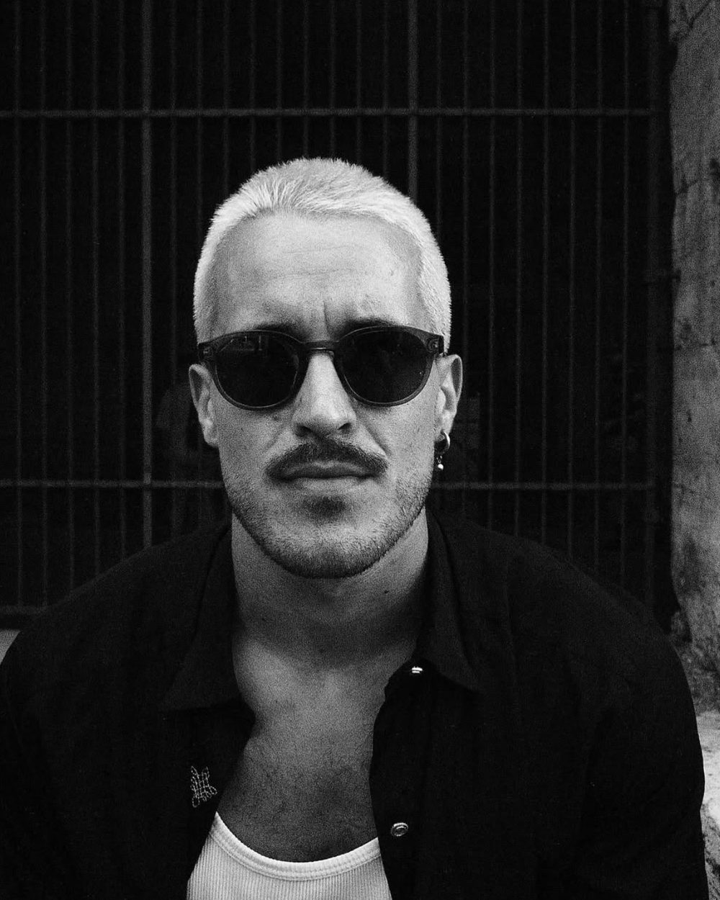

Coaching, das dich zu dir zurückbringt.
Enge Einzelbegleitung für Menschen, die spüren, dass mehr geht — mehr Klarheit, mehr Kraft, mehr Ausrichtung. Nicht lauter, sondern wahrer.

Drei Fragen stehen im Zentrum.
Wer bin ich wirklich, jenseits von Rollen und Erwartungen? Was ist mir wirklich wichtig? Und wie richte ich mein Leben danach aus — im Alltag, nicht nur im Kopf? Um diese drei Fragen — Selbstkenntnis, Sinn, Ausrichtung — dreht sich unsere Arbeit.
Ich arbeite nicht mit fertigen Rezepten. Wir schauen gemeinsam auf das, was ist, und finden deinen Weg — Schritt für Schritt, ehrlich und mit einer guten Portion Ruhe.
Was dich erwartet.
- Ehrliche Gespräche auf Augenhöhe — ohne Bewertung, ohne Show.
- Konkrete Ansätze für deinen Alltag, nicht nur schöne Erkenntnisse.
- Arbeit an Körper, Geist und innerer Haltung — als Ganzes gedacht.
- Eine Begleitung, die auch dann bleibt, wenn es unbequem wird.
In drei ruhigen Schritten.
Kennenlernen
15 Minuten, in denen wir schauen, ob es menschlich und inhaltlich passt. Kostenlos, ohne Druck.
Strategiegespräch
Wir schärfen, worum es dir wirklich geht, und legen eine klare Herangehensweise fest.
Begleitung
2–3 Monate enge Zusammenarbeit, danach Begleitung in der Integration — bis das Neue trägt.
Zu Umfang und Konditionen sprechen wir persönlich. [KLÄREN: Preise/Preisrahmen & Format (online / Berlin)]
Klingt nach dir?
Dann lass uns 15 Minuten sprechen — unverbindlich und kostenlos.
Kennenlernen vereinbaren →